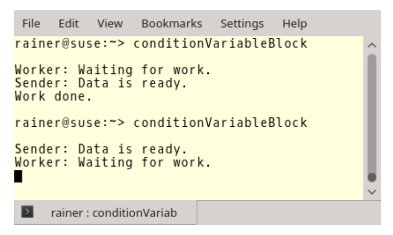

条件变量
条件变量通过消息对线程进行同步(需要包含<condition_variable>头文件)，一个线程作为发送方，另一个线程作为接收方，接收方等待来自发送方的通知。条件变量的典型用例：发送方-接收方或生产者-消费者模式。
条件变量cv的成员函数
| 成员函数 | 函数描述 |
|---|---|
cv.notify_one() | 通知一个等待中的线程 |
cv.notify_all() | 通知所有等待中的线程 |
cv.wait(lock, ...) | 持有std::unique_lock，并等待通知 |
cv.wait_for(lock, relTime, ...) | 持有std::unique_lock，并在给定的时间段内等待通知 |
cv.wait_until(lock, absTime, ...) | 持有std::unique_lock的同时，并在给定的时间点前等待通知 |
cv.native_handle() | 返回条件变量的底层句柄 |
cv.notify_one和cv.notify_all相比较，cv.notify_all会通知所有正在等待的线程，cv.notify_one只通知一个正在等待的线程，其他条件变量依旧保持在等待状态。介绍条件变量的详细信息之前，来看个示例。
// conditionVariable.cpp
#include <iostream>
#include <condition_variable>
#include <mutex>
#include <thread>
std::mutex mutex_;
std::condition_variable condVar;
bool dataReady{ false };
void doTheWork() {
std::cout << "Processing shared data." << std::endl;
}
void waitingForWork() {
std::cout << "Worker: Waiting for work." << std::endl;
std::unique_lock<std::mutex> lck(mutex_);
condVar.wait(lck, [] {return dataReady; });
doTheWork();
std::cout << "Work done." << std::endl;
}
void setDataReady() {
{
std::lock_guard<std::mutex> lck(mutex_);
dataReady = true;
}
std::cout << "Sender: Data is ready." << std::endl;
condVar.notify_one();
}
int main() {
std::cout << std::endl;
std::thread t1(waitingForWork);
std::thread t2(setDataReady);
t1.join();
t2.join();
std::cout << std::endl;
}
该程序有两个子线程：t1和t2。第38行和第39行中，线程得到工作包waitingForWork和setDataRead。setDataReady使用条件变量condVar通知其他线程准备工作已经完成：condVar.notify_one()。当持有锁时，线程t1等待它的通知：condVar.wait(lck, []{ return dataReady; }) 。发送方和接收方需要一个锁，对于发送方，std::lock_guard就足够了，因为lock和unlock只调用一次；对于接收方来说，std::unique_lock是必需的，因为它需要锁定和解锁互斥锁。
程序的输出如下：

std::condition_variable_any
std::condition_variable只能等待类型为std::unique_lock<mutex>的对象，但是std::condition_variable_any可以等待符合BasicLockable原则的锁类型。std::condition_variable_any与std::condition_variable支持的接口相同。
谓词
在没有谓词的情况下也可以调用wait，那么读者朋友应该很想知道，为什么调用wait需要谓词。
等待使用谓词与否都是可以的，先来看个例子。
// conditionVariableBlock.cpp
#include <iostream>
#include <condition_variable>
#include <mutex>
#include <thread>
std::mutex mutex_;
std::condition_variable condVar;
void waitingForWork() {
std::cout << "Worker: Waiting for work." << std::endl;
std::unique_lock<std::mutex> lck(mutex_);
condVar.wait(lck);
// do the work
std::cout << "Work done." << std::endl;
}
void setDataReady() {
std::cout << "Sender: Data is ready." << std::endl;
condVar.notify_one();
}
int main() {
std::cout << std::endl;
std::thread t1(setDataReady);
std::thread t2(waitingForWork);
t1.join();
t2.join();
std::cout << std::endl;
}
程序的第一次运行正常，但第二次阻塞是因为通知(第25行)发生在线程t2(第34行)进入等待状态(第16行)之前。

现在就很清楚了，谓词是无状态条件变量，所以等待过程中总是检查谓词。条件变量有两个已知有害现象：未唤醒和伪唤醒。
未唤醒和伪唤醒
未唤醒
该现象是发送方在接收方到达其等待状态之前发送通知，结果是通知丢失了。C++标准将条件变量描述为同步机制：“条件变量类是同步原语，可用于阻塞一个线程，或同时阻塞多个线程……”所以通知丢失了，接收者就会持续等待……
伪唤醒
还有一种情况，就会没有发通知，但接收方会被唤醒。使用POSIX Threads和 Windows API时，都会出现这样的现象。伪唤醒的真相，很可能是本来就没有处于休眠状态。这意味着，在被唤醒的线程有机会运行之前，另一个线程早就等候多时了。
等待线程的工作流程
等待线程的工作流程相当复杂。
下面是来自前面示例conditionVariable.cpp的19和20行。
std::unique_lock<std::mutex> lck(mutex_);
condVar.wait(lck, []{ return dataReady; });
上面两行与下面四行等价：
std::unique_lock<std::mutex> lck(mutex_);
while ( ![]{ return dataReady; }() {
condVar.wait(lck);
}
首先，必须区分std::unique_lock<std::mutex> lck(mutex_)的第一次调用与条件变量的通知：condVar.wait(lck)。
std::unique_lock<std::mutex> lck(mutex_): 初始化阶段，线程就将互斥量锁定，并对谓词函数[]{ return dataReady;}进行检查。- 谓词返回值：
- true : 线程继续等待。
- false :
condVar.wait()解锁互斥量，并将线程置为等待(阻塞)状态。
condVar.wait(lck): 如果condition_variable condVar处于等待状态，并获得通知或伪唤醒处于运行状态，则执行以下步骤：- 线程解除阻塞，重新获得互斥锁。
- 检查谓词函数。
- 当谓词函数返回值为：
- true : 线程继续工作。
- false :
condVar.wait()解锁互斥量，并将线程置为等待(阻塞)状态。
即使共享变量是原子的，也必须在互斥锁保护下进行修改，以便将正确地内容告知等待的线程。
使用互斥锁来保护共享变量
即使将
dataReady设置为原子变量，也必须在互斥锁的保护下进行修改；如果没有，对于等待线程来说dataReady的内容就可能是错的，此竞争条件可能导致死锁。让我们再次查看下等待的工作流，并假设deadReady是一个原子变量，在不受互斥量mutex_保护时进行修改的情况。std::unique_lock<std::mutex> lck(mutex_); while ( ![]{ return dataReady.load(); }() { // time window condVar.wait(lck); }假设在条件变量
condVar，在不处于等待状态时发送通知。这样，线程执行到第2行和第4行之间时(参见注释时间窗口)会丢失通知。之后，线程返回到等待状态，可能会永远休眠。如果
dataReady被互斥锁保护，就不会发生这种情况。由于与互斥锁能够同步线程，只有在接收线程处于等待状态的情况下才会发送通知。
大多数用例中，可以使用任务，用简单的方式同步线程。“任务-通知”章节中，将条件变量和任务进行了对比。